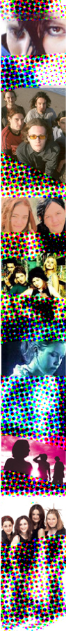

| |
MUSICAL CHEERS
| |
The hills are well and truly alive here at noise, with the sound of music permeating multiple media platforms and the DIY musicians and up-and-coming indie groups coming to the fore in welcome style. DJs, bands, experimental sound artists and performers of all kinds submitted noisy works to us, in preparation for a month where you definitely won't be hearing the same old tunes again.
| |
How many musicians wouldn't give their last jar of vegemite to get radio airplay, a film clip on Rage or an article in Rolling Stone? Not many, one would assume. Better still, imagine if you got a track on a free CD planted on the cover of the illustrious magazine? Whoa...
This is exactly the scope of opportunities offered by noise's venture into the wide world of music this month, and one which caught the attention of the Office of the Status of Women (OSW) - our partner in the special Rolling Stone edition and an active believer in addressing pertinent issues of young people.
Comprising of a 32-page lift-out and a 16-track compilation CD, the issue yields stacks of new artist profiles, photos, first-hand recollections from punters and professionals, and stories from (and about) women in the Australian music industry.
Craig Kamber, noise's Music Producer has seen the Rolling Stone project from inception through to delivery, and cites his highlight as "seeing the breadth and depth of talent of a variety of musical genres from around the country," with the CD displaying "a good mixture of up-and-coming and semi-established artists."
Featured artists include the likes of Diana Ah Naid, Lash, Waikiki, George, Missy Higgins, Centipede and Epicure - giving you an idea of the diversity on show and the talent that exists in various stages of development around the country at present. Songs that explore the great divide from heartfelt issues and relationships to strange and light-hearted tales, but all from a woman's perspective.
Where else can I cop noise in the ear, you may ask?
On the radio of course. triple j is running various remix projects for noise including new artist profiles on Mix Up and the well-publicised Fatboy Slim competition, while the SBS radio people are similarly hip to the groove on their Saturday night Alchemy program - airing new remix works and artists this month too.
And then there's the many other chasms of playlisting that new artists will find themselves a part of during October, including triple j, nationwide community radio stations, ABC local and regional radio - the mainstream Austereo network of Australian stations are even profiling new artists sporadically.
"Vanessa Morfea is an unknown singer songwriter who is destined for great things," comments noise Radio Producer Lorna Clarkson, "Missy Higgins [also on the Rolling Stone CD] is already getting attention as the next Tori Amos, Tom Phillipson is the master of quirky electronica and Prop (who have been playing in Sydney for years) are ready to amaze the world with their musical genius."
October is the month for music lovers, and be sure to get your fix of the visual/sound mix on Saturday 27 as ABC TV's Rage charges forth with a late night of noise that features nothing but young Australian bands and artists. And don't forget to pick up your copy of Rolling Stone (with free CD), out now in any newsagents, and listen out for the unavoidable noise coming through the radio.
Want to find out more about the artists involved? Have a look around our site (using the links below) for our sizeable quantity of profiles and links. Still got sounds you want the people of the world to hear? There's still time to get your audio works in through the TRUE TALES OF LOVE AND HATE project. Get cracking now...
Return to the MUSIC Project Homepage
Or go directly to these Project homepages:
ABC RADIO / SBS / COMMUNITY RADIO / FATBOY SLIM
|
|
|